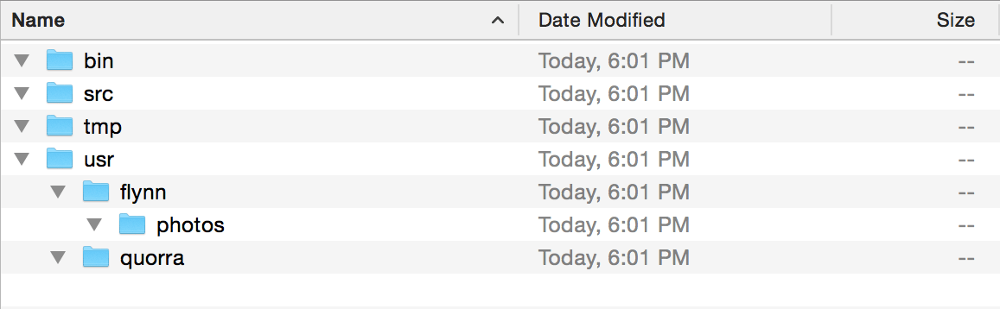

File Systems
A typical operating system — all the instructions which make a computer run — includes millions of individual files.
How does a computer? human? keep the information organized?
Flat File Systems
Older computers used flat file systems in which every file had a different name stored in the same location.
This proved slow and ineffective because computers had to read the entire storage media to find a file it wanted to locate.
(Some older machines only had 4k (four-trillionths of a TB!) of storage to look through, so it may not have seemed like an issue then.)
Hierarchical File Systems
Modern computers rely on a hierarchical file systems which group similar files in a tree-like structure.
The system relies on the use of drives and directories to organize files.
Hierarchical File Tree
Each block is a directory and presumably contains files.

How it 'looks'
Describing directory paths
/ (root directory)
/bin
/usr/quorra
/usr/flynn/photos
/
The root directory (indicated as a slash (/) ) is the top-most directory of a file system.
If we likened our system to a filing cabinet, root would be the cabinet itself, while the the directories would be the folders inside .
Current & Previous Directories
Sometimes we need to indicate a current or previous directory as we move around a file tree. Use shorthand indicators to denote these.
Current Directory: .
Previous Directory: ..
Absolute Paths
- always start from the
rootdirectory - indicated by a slash (
/) at the start of the path
Example: From any directory, we can access photos using: /usr/flynn/photos
Relative Paths
- points to a directory, filename in your current working directory
- does not start with a slash (
/) at the start of the path - utilizes previous directory shorthand
- often used in programming due to portability
Example: Our working directory is: /usr/flynn/photos.
To get to tmp: ../../../tmp
Naming Files
Our computers are set up for ease-of-use. That leads users to develop sloppy habits when naming files and directories.
When programming, working with data or developing for the web, this can cause a number of avoidable problems.
Moving forward, incorporate the following conventions into your workflow. Doing so will aid in efficiency and help avoid bugs or other headaches when coding.
File Naming Conventions
- Avoid space characters
- Avoid special characters (i.e.
?,%,#, etc.) - Use lowercase letters
- Use proper suffixes (i.e.
.html,.jpg,.js,.rb) - Use descriptive filenames
Avoid space characters
- DO NOT use spaces, tabs in filenames
- Use hyphens (
-), underscores (_) - Hyphens are preferred by search engines
Avoid special characters
- DO NOT use
?,%,#, etc. - These are reserved by servers for special purposes
- Stick to lowercase letters, numbers and periods
Use lowercase letters
- Writing filenames in lowercase is a widely accepted standard to ensure compatibility across systems
- Servers are case-sensitive
File.txtandfile.txtare not the same
Use proper suffixes
- Computers (and servers) rely on suffixes to determine which applications should be used to work with a file
- Provide context for humans as to the type of file (i.e. text, graphic)
Use descriptive file names
- Users should be able to read a file name and have a general idea of what its contents are
- Aim to keep file names short, but never at the expense of context
What is it?
A co-worker hands you a thumb drive with many files. Below are a few.
How should these be fixed? What do you think the files are?
essayMy Data Set.xlscute#photo.jpg
Hard to tell, yes?
Context is important
Let's try this again:
- journalism-ethics-essay.txt
- 2015-marlins-batting-average.xls
- my-cat-flynn.jpg
We may still have to look at the file to gain more detail, but we have a better idea of the types of files and contents.
Examples of naming conventions
A few examples of how we used to identify image files at Fox Sports:
140317-basketball-nba-heat-lebron-james-dunks.jpg150412-hockey-nhl-panthers-nick-bjugstad.jpg150618-baseball-mlb-marlins-jose-fernandez.jpg
Convention:
- date (YYMMDD)
- sport
- league
- team
- player name / description
- file extension
Exercise
Magic Kingdom Tree

The Magic Kingdom utilizes a 'hub-and-spoke' model ... and you can travel from one land to another without going through the hub.
For purposes of this exercise, let's imagine cast members have cut off our land-to-land pathways. We always have to navigate through the hub.
How do I get to...?
Using absolute paths, let's plot our directions.
From Entrance to Tomorrowland:
/main-street/hub/tomorrowland
From Entrance to Adventureland:
/main-street/hub/adventureland
From Entrance to Fantasyland then to Frontierland:
/main-street/hub/fantasyland/../frontierland
From one land to another
What if we're already inside the park? Using relative paths is more efficient to describe our directions.
From Fantasyland to Frontierland:
../frontierland
From Tomorrowland to Liberty Square:
../liberty-square
From any land to Main Street:
../../
Site Architecture
As we build sites, the number of components (html files, css files, images, etc.) used can grow quickly.
We can utilize directories to keep our information organized.
Generally speaking:
- Images should always belong in a directory called
imagesorimg(or something else reflecting the content) - stylesheets should always be kept in a directory called
cssorstyles(or, again, something else reflecting the content).
A Build-Up of Content
If we built a site with different sections, we probably will not use individual .html in our root directory for long.
For instance:
baseball.htmlbaseball-players.htmlbaseball-schedule.htmlbaseball-standings.htmlbaseball-teams.html
What if required this system for all sports (basketball, football, hockey, soccer)? And different leagues? What if we want pages for each team? Each player? We might end up with hundreds or thousands of files in our root directory.
Organizing Content
Instead of keeping all files in the same directory, we can better organize our content.
baseball/players/- (one page for each player)
schedule.htmlstandings.htmlteams/- (one page for each team)
Paths Are Multipurpose
In addition to keeping a web site designer/developer organized, paths also provide context to a user.
The path to a file on a web site, always appears in the URL bar.
Paths build our URLs!
Paths as URLs
baseball/players/jose-fernandez.html
schedule.htmlstandings.htmlteams/miami-marlins.html
http://www.my-site.com/baseball/players/jose-fernandez.html
http://www.my-site.com/baseball/schedule.html
http://www.my-site.com/baseball/standings.html
http://www.my-site.com/baseball/teams/miami-marlins.html
Paths in HTML
When we organize our site, we use paths within our HTML tags to indicate where our content is located.
When a file being requested is in the same directory as the file requesting it, we only need to specify the file name.
When a file being requested is in a subdirectory, we specify the forward path.
When the file being requested is in a higher directory, we must backtrack using the two dots (..) before specifying the forward path.
Absolute or Relative?
Both absolute and relative paths will work, however, it is best to use relative paths.
The problem with absolute paths is they can sometimes be too specific. When transferring files from one computer to another (such as uploading to a server), the path which exists on a user's computer is likely not the same as the server.
For instance:
- user:
/Users/exb192/Sites/my-web-site/cats/index.html - server:
/html/cats/index.html
Servers are usually set up for each user to be working from a root directory. An example of what would be portable (if html is our root directory):
- user:
cats/index.html - server:
cats/index.html
Examples of Paths in Use
<link href="../css/style.css" rel="stylesheet" />
<img src="images/players/jose-fernandez.jpg" alt="Jose Fernandez" />
<a href="teams/miami-marlins.html">Miami Marlins</a>
These are examples which would work on both a user computer and server (assuming all files are uploaded properly).